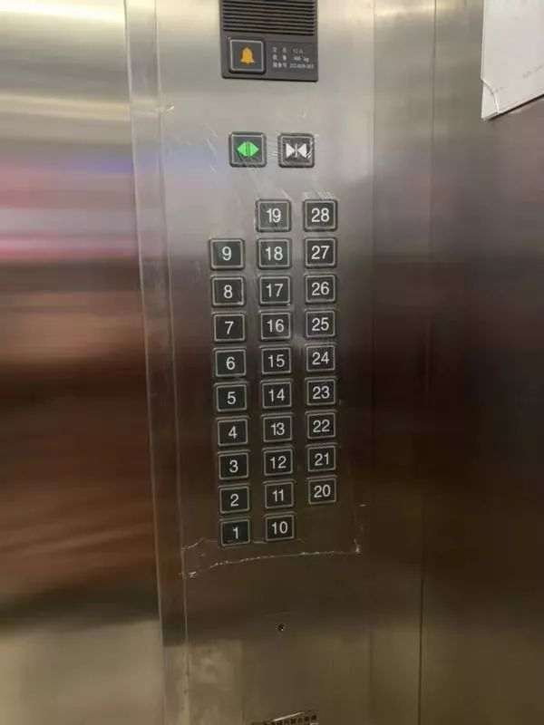
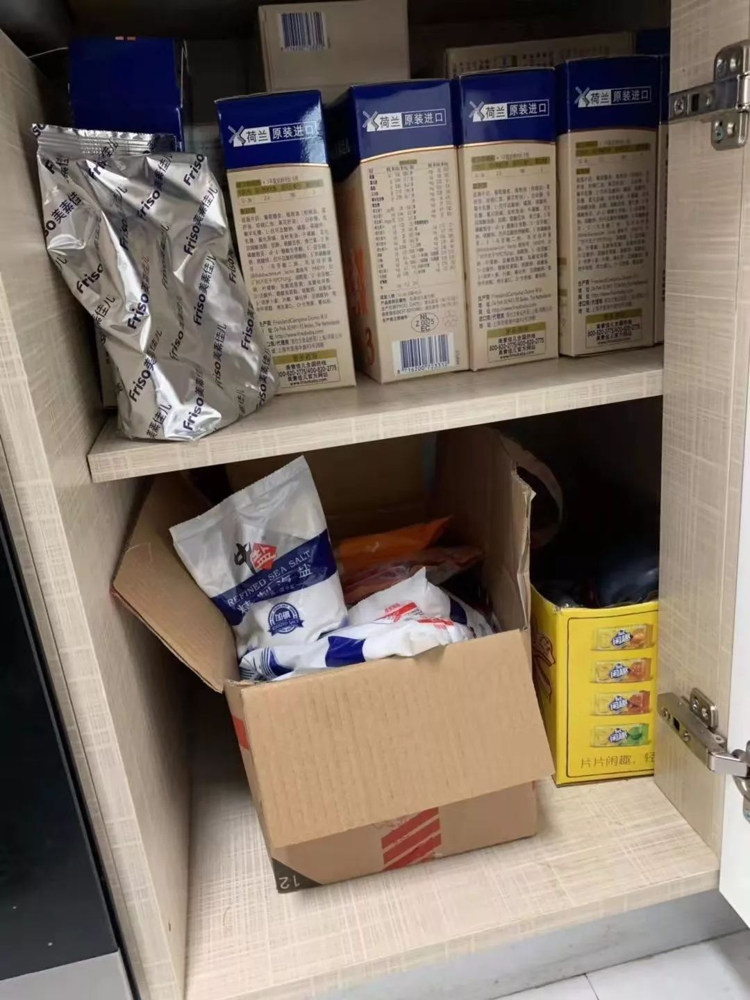
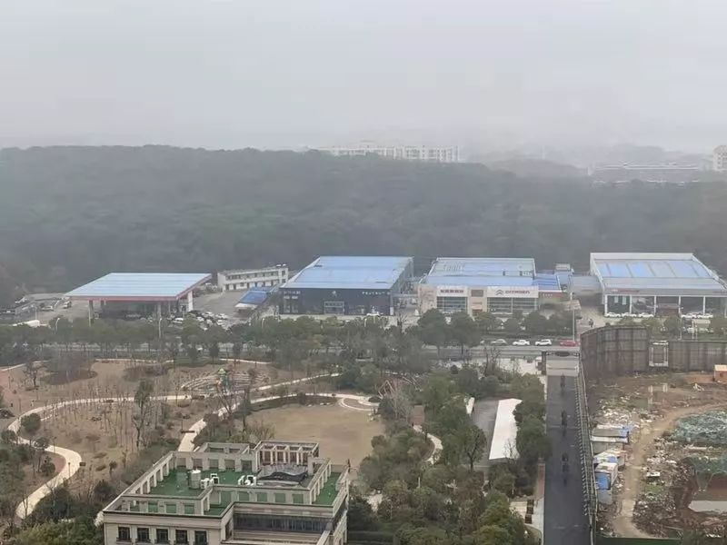

一个独居女性的武汉封城日记|1月23—26日
原文链接 备份链接 这是我的朋友郭晶的日记。 记录了封城期间在武汉独居的外来女性的真实生活体验和心理感受。 她第一次发在微博上的日记被转发近5000次，第二条就严重被限流。所以我想帮她编辑转载到微信。 有朋友建议郭晶在这段时间可以学习或者 …
我是河南信阳人，在武汉读书，毕业后留在武汉，现居洪山区，是一个1岁多的孩子的妈妈。武汉是疫情中心，老家信阳距离武汉很近，现在也是疫情重点排查城市。
1月20号，“封城”三天前，钟南山院士提到新冠肺炎存在人传人现象。这个新闻我只是稍微看了一下，心里并不觉得慌。因为从公布的数据来看，感染人数并不多，死亡率也不高，我的侥幸心理使得我对这件事情的反应有些迟滞。大概也是从20号开始，武汉成了大众焦点，恐慌的情绪开始滋生。
1月21号，小区附近的朋友给我发消息，提醒我不要带孩子到处乱跑，街上都是戴口罩的。但是前两天我们在小区附近溜达的时候还没有人戴口罩，可能院士的呼吁起了作用，大家开始重视起来了。我们物业响应的也比较及时，当天就对电梯进行消毒了。后来电梯的按键都用保鲜膜覆盖了，一天更换一次。

小区电梯上的按键上1月21号后每天覆盖并更换保鲜膜
事实上，自去年12月中旬武汉流感严重，不少小学和幼儿园停课，我们由那时起就避免带孩子去人员密集的地方，也未与其他人有过密切接触。同时朋友也告诉我，附近药店n95口罩58元一个。我赶紧盘点了一下家里的口罩，n95差不多有10个，一次性口罩220个，我想这些口罩应该足够了。此时我并未有多恐慌，只觉得一切还好。

之前家中所储备的口罩
到了22号，就是“封城”前一天，网民对于武汉肺炎的恐慌情绪愈发严重。我在朋友圈看到很多消息：有朋友因武汉身份证被退订酒店，有朋友回家途经武汉站感到恐慌，有朋友改订车票不从武汉中转，有朋友退掉从武汉回老家的车票。
这时，我才意识到事情并没有我想的那么乐观。我们取消了去超市采购的计划。晚上，我反复刷关于武汉肺炎的消息，直到凌晨两三点，网络上武汉“封城”的呼声很多。我忐忑不安。虽然潜意识里感觉出现极端情况的可能性小，但是我依旧害怕情况恶化，出现生活用品短缺或者哄抬物价的现象，保险起见，我在网上买了很多奶粉和尿不湿，还有一些生鲜，默默祈祷我的订单还能派送。
1月23号凌晨五点，刚刚入睡不到两个小时，我被孩子的哼唧声吵醒，给孩子冲完奶之后，我打开微博一看，脑子瞬间懵掉了，真的“封城”了？虽然这两天随着事情的发酵，我和老公也讨论过武汉会不会“封城”的问题，但结论是可能性很小。武汉作为全国的交通枢纽之一，“封城”影响之后，居民生活怎么办？
镇定下来，我又觉得此刻“封城”或许也是最合理的安排。但我们的生活怎么办，才是我此刻最应该关注的问题。我担心天一亮大家会不会都出去哄抢食物，物价会不会飙升。我打开电商网站，价格正常，又下了两单生鲜，不管能不能配送，总算安心一点儿。
下完单之后，我叫醒老公，告诉他“封城”的消息。他整个人还晕乎乎的，我尽量克制住此刻的惊慌。老公缓了几秒， 带着刚刚睡醒的鼻音回了我一句：“还是‘封城’了”。
他清醒过来之后，看了下地图，路况目前畅通。他说，我要是想回河南老家，这是最后的机会，要走就现在走。我拒绝了，我不想回去之后给家里添麻烦，现在回去对于自己和他人而言都是考验。
我们最主要的问题就是生活物资。早上6点半，老公出发去中百超市，超市还没开门，但是已经有很多人在超市门口等候了。8点半，老公采购回来，我看了一下，大白菜1.99元一斤，土豆2.99元一斤，都还是正常的价格。但当天上午武汉菜价就上了微博热搜。我们庆幸早上行动比较及时。其实菜价基本都是正常的，网传价格离谱的超市也都被约谈了。



为应对“封城”所储备的食物
我们盘点了一下家里的物资储备，生活两三个月足够，就是蔬菜要定期去采购。
暂时无事，我们通过地图APP关注武汉的交通，眼看着几个出城通道的路况从绿色慢慢变成红色。朋友圈里，有些朋友堵在离开武汉前往湖北地级市老家的高速上。我估计这些行为放在网络上是要被骂死的，我不赞成但是我也无权反驳。早上九点多，我去阳台晾衣服，看到家对面的加油站，很多车排队加油，又过了半个小时再过去看，队伍已经越来越长，根据我的观察，当天排队加油的情况一直到下午两三点才结束。

“封城”当天，家对面的加油站，私家车排队加油
也是在当天，公公婆婆不听我们的劝阻执意要返回湖北某个小镇的老家，按照他们的想法，过年是一定要给先人烧纸放鞭炮。不过值得庆幸的是，他们到镇上的家中之后一直处于自我隔离状态，后来村道被堵，车辆不通，祭拜先人的事也未能成行。
到晚上6点左右，手机地图上武汉的出口基本都封了，我和老公突然想开车出去看一下现在的大武汉到底是什么状态。我们计划沿着二环转一圈：雄楚高架——鹦鹉洲长江大桥——知音桥——二七长江大桥——珞狮南路返回。出门之后，偶尔能遇到一辆电动车，小区附近的中百超市已经关门。
一向车流量很大的雄楚高架，此时和平时凌晨两三点差不多冷清，路的两旁，居民楼里有一小半的灯亮着，除了药店和便利店外，其他店铺都关门了。透过车窗能看到便利店里的货架很多都空了。刚入夜，整座城市就像是睡着了。
我们过鹦鹉洲大桥前往汉口方向，窗外正淅淅沥沥的下着雨，以往这个时间点，江两岸的景观灯都是开着的，此刻却是漆黑一片。也许是我看到都是入住不久的新盘，车辆进入汉口区域，一栋楼里都只能零星的看到几户人家亮着灯。
一路上，我和老公的情绪都比较低落。小孩子反而很兴奋，在车里闹腾出了一身的汗。我立刻紧张起来，如果孩子此刻生病去医院，非常麻烦。所幸，孩子一切都好。
晚上八点，我们回到家中，心里很难受。我们讨论起这场灾难过后，九省通衢的武汉经济会受到怎样的影响，要付出多少努力和时间才能恢复之前的状态。
1月24号，大年三十，“封城”第二天。早上在睡梦中被孩子吵醒，梦里新冠肺炎越来越严重，具体的情节已经模糊，只能依稀记得梦中不知道自己在哪里，不知道要去向何方。
起床后，打开窗户，楼下空空荡荡，安静极了，只偶尔能看见行人提着满满的购物袋匆匆走过。年夜饭简单的做了几个菜。吃完年夜饭，我们看起了韩国电影《流感》。看完之后并未感觉更恐惧，因为我们的现实情况比电影里好太多了。
1月25号，正月初一，“封城”第三天。中午，同在武汉的朋友给我发消息，说她自己一个人在家快要无聊死了。我想邀请她到我们家来玩，但是转念一想不太妥当，也只能劝劝她网上斗个地主啥的。
这些天，我和老公没事儿就刷新闻，看着病例增多，全国各地的病例几乎都和武汉有关，评论里都是责怪武汉人到处乱跑的。其实这对于很多从武汉离开的人是不公平的。
武汉作为中原地区的超大城市，外来人口众多。在我的河南信阳老家，就有很多来武汉务工的人员。武汉的大学生数量已经超过100万。高校学生以及不少人，是在事件发酵前离开的。
我家小区的一个邻居，一家四口是在1月20号返回安徽老家过年的。回去几天，他们从最开始庆幸离开武汉这个危险区域，变成不敢让亲戚上门，自己也不敢出门。煎熬了几天之后，在武汉“封城”的第三天，他们又从安徽回到了武汉。
下午，我们看到武汉可能禁行机动车的消息。老公要去取快递。京东这两天一直没派送，给我发过消息说，可以自取。我们大人的问题好解决，但是孩子要喝奶粉，要用尿不湿，得备货。“封城”的日子不知道还要多久，快递不能上门，对于长期依赖电商的人来讲，着实有些难受。京东仓库爆满，他们只有一个工作人员在那儿留守，老公翻了半天，也只取回来几件，好在奶粉是取到了。
1月26号，正月初二，“封城”第四天。依旧每天刷新闻到凌晨，睡着了还做着关于武汉肺炎各种的梦。小孩受我们影响每天也睡得晚，基本上一觉醒来就是快中午了，这样也好，我们一天两餐就行了。
1月27号，正月初三，“封城”第五天。一觉醒来，科比去世，感觉世界确实有点儿魔幻了。微信里朋友发来消息，大家存货不够了，都出来采购了，超市蔬菜价格正常但是已经被抢购一空，尿不湿断码了。接下来我还要盘算一下，小孩子的尿不湿还能用多久。
原文链接 备份链接 这是我的朋友郭晶的日记。 记录了封城期间在武汉独居的外来女性的真实生活体验和心理感受。 她第一次发在微博上的日记被转发近5000次，第二条就严重被限流。所以我想帮她编辑转载到微信。 有朋友建议郭晶在这段时间可以学习或者 …
原文链接 备份链接 作者 | 薛芳 孙宏超 相欣 安然 马关夏 李越 编辑 | 康晓 出品｜深网·腾讯小满工作室 欢迎下载腾讯新闻APP，阅读更多优质资讯 平平安安就是年。 突袭而至的新病毒能阻止很多中国人在这个春节里团聚，但没有什么能阻 …
原文链接 备份链接 这几天都睡得特别晚，昨天凌晨两点多，突然在网上刷到武汉即将停掉市内所有公共交通，包括地铁，关闭机场和火车站等外出方式的时候，心里咯噔了一下，一来是这个措施说明疫情形势很严峻，二来是这辈子万万没想到会遇见一次“封城”。 …
原文链接 备份链接 今天是“武汉日常”每日书的第四篇，在孝感的学生写到当地村民自发拦路封村，尽管道路后面的横幅还写着他们希望并且欢迎在外乡亲回家；有在黄石的编剧路过黄石最繁华的步行街，发现那里几乎没有任何动静；有居住在武汉市区自愿帮助陌生 …
原文链接 备份链接 1⁄10 2020年1月25日，农历大年初一 来信：@徐大夫 坐标：武汉某心内科重症监护室 我们科室新年第一天上班的合照。 大家一起努力！ 2⁄10 2020年1月25日 来信：@双十一张友文 …